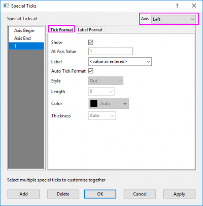
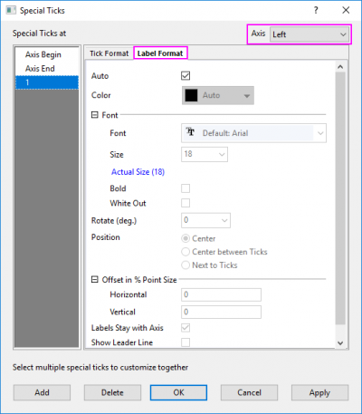

Verwenden Sie die Bedienelemente auf dieser Registerkarte, um spezielle Hilfsstriche am Achsenanfang bzw. -ende oder jede benutzerdefinierte Achsenposition hinzuzufügen. Beachten Sie, dass Sie die Gleichen Optionen verwenden können, um spezielle Hilfsstriche zu mehreren Achsen gleichzeitig hinzuzufügen.
Grafiken mit mehreren Layern fügen eine Layerliste hinzu, so dass Sie zwischen Layern in einer Grafik mit mehreren Layern wechseln können.
| Gleiche Optionen für Unten und Oben / Links und Rechts / Vorn und Hinten verwenden | Der Inhalt für dieses Kontrollkästchen aktualisiert sich mit dem aktuell aktiven Achsensymbol. Aktivieren Sie dieses Kontrollkästchen, um festzulegen, ob die Einstellungen von sich gegenüberliegenden Achsen geteilt werden sollen. Beachten Sie, dass, wenn im Fall von 3D-Diagrammen das Kontrollkästchen Nur eine Achse für jede Richtung zeigen deaktiviert ist, alle oben stehenden Kontrollkästchen angezeigt werden. |
|---|
Die aktuelle Einstellung der speziellen Hilfsstriche wird in diesem Anzeigefeld angezeigt.
Diese Spalte wird verwendet, um die Beschriftung des entsprechenden speziellen Hilfsstrichs zu definieren.
|
Sie können die Schreibweise %1 verwenden, um die aktuelle Hilfsstrichsbeschriftung an jedem beliebigen Punkt des Ausdrucks einzufügen. Lautet die aktuelle Hilfsstrichsbeschriftung zum Beispiel “19”, geben Sie %199 in das Textfeld der Beschriftung ein, um den Text “1999" anzuzeigen. Verwenden Sie die Schreibweise $(x), um die aktuelle Hilfsstrichsbeschriftung in einer Berechnung zu verwenden, wobei x der aktuelle Wert der Hilfsstrichsbeschriftung ist. Lautet die aktuelle Beschriftung “99”, geben Sie $(1900+x) ein, um “1999” anzuzeigen. |
Das Kontrollkästchen in dieser Zelle wird verwendet, um zu bestimmen, ob der in der gleichen Zeile definierte spezielle Hilfsstrich gezeigt wird.
Es gibt zwei Schaltflächen unter dem Anzeigefeld:
| Löschen | Diese Schaltfläche ist verfügbar, wenn ein oder mehrere benutzerdefinierte Einträge für spezielle Hilfsstriche im Anzeigefeld ausgewählt sind. (nicht einschließlich Achsenanfang und Achsenende). Halten Sie Strg gedrückt und klicken Sie, um mehrere spezielle Hilfsstriche auszuwählen. |
|---|---|
| Details | Diese Schaltfläche wird verwendet, um den Dialog Spezielle Hilfsstriche für die benutzerdefinierte Anpassung des Stils der speziellen Hilfsstriche zu öffnen. |
Dieser Dialog kann durch Klicken auf die Schaltfläche Details auf der Registerkarte Spezielle Hilfsstriche im Dialog Achsen geöffnet werden. Er wird verwendet, um den Hilfsstrich und das Beschriftungsformat der speziellen Hilfsstriche benutzerdefiniert anzupassen.
|
Wenn dieser Dialog geöffnet ist, wird der Hauptdialog Achsen verborgen. Sie können auf die Schaltfläche Anwenden klicken, um die Änderung nur in diesem Dialog anzuwenden, ohne zum Hauptdialog Achsen zurückzukehren. Wenn Sie auf die Schaltfläche OK klicken, werden die Einstellungen gespeichert und dieser Dialog geschlossen. Klicken Sie auf die Schaltfläche Abbrechen, um diesen Dialog zu schließen und wieder den Hauptdialog anzuzeigen. |
Um das Format der speziellen Hilfsstriche anzupassen, wählen Sie einen oder mehrere spezielle Hilfsstriche im Feld Spezielle Hilfsstriche bei. (Für eine Mehrfachauswahl halten Sie die Strg-Taste gedrückt und klicken Sie) und ändern Sie die Einstellungen auf der Registerkarte Hilfsstrichsformat oder Beschriftungsformat.
|  |  |
Sie können eine Achse aus der Auswahlliste Achsen in der rechten oberen Ecke wählen, um zwischen den vier Achsen zu wechseln und die speziellen Hilfsstriche auf den unterschiedlichen Achsen benutzerdefiniert anzupassen.
Auf dieser Registerkarte befinden sich die Bedienelemente für die Hilfsstrichsmarkierung der ausgewählten speziellen Hilfsstriche.
| Zeigen |
Für die reservierten speziellen Hilfsstriche Achsenanfang und Achsenende ist dieses Bedienelement eine Auswahlliste. Sie können unter den Optionen Auto, Verstecken und Zeigen wählen. Die Option Auto bedeutet hierbei, dass den Standardeinstellungen der Hilfsstriche gefolgt wird. Für die benutzerdefinierten speziellen Hilfsstriche ist dies ein Kontrollkästchen, mit dem Sie bestimmen, ob dieser spezielle Hilfsstrich gezeigt wird oder nicht. |
|---|---|
| Bei Achsenwert |
Dieses Textfeld ist nur verfügbar für einen benutzerdefinierten speziellen Hilfsstrich. Es wird verwendet, um die Position des speziellen Hilfsstrichs auf der Achse festzulegen. Einzelheiten finden Sie im Abschnitt Bei Achsenwert oben. |
| Beschriftung |
Dieses Textfeld ist nur verfügbar, wenn Zeigen ausgewählt ist. Es wird verwendet, um die Beschriftung bei dem speziellen Hilfsstrich festzulegen. Einzelheiten finden Sie im Abschnitt Beschriftung oben. |
| Automatisches Hilfsstrichsformat |
Dieses Kontrollkästchen ist nur verfügbar, wenn Zeigen aktiviert ist. Wenn es aktiviert ist, folgt der spezielle Hilfsstrich der Einstellung der Achsenhilfsstriche auf der Registerkarte Linie und Hilfsstriche. Alle Bedienelemente unten werden deaktiviert. |
| Bedienelemente des Hilfsstrichsstils |
Mit den vier Bedienelementen: Stil, Länge, Farbe und Dicke wird das Format der speziellen Hilfsstriche benutzerdefiniert angepasst. Einzelheiten finden Sie in der Origin-Hilfe unter Registerkarte Linie und Hilfsstriche. |
Auf dieser Registerkarte befinden sich die Bedienelemente für die Hilfsstrichsbeschriftung der ausgewählten speziellen Hilfsstriche.
Wenn das Kontrollkästchen Auto aktiviert ist, folgt das Beschriftungsformat der ausgewählten speziellen Hilfsstriche den Formateinstellungen der Hilfsstrichsbeschriftung auf der Registerkarte Hilfsstrichsbeschriftung - Format.
Um das Format der Hilfsstrichsbeschriftung separat benutzerdefiniert anzupassen, deaktivieren Sie das Kontrollkästchen Auto, und die anderen Bedienelemente unten werden aktiviert. Einzelheiten finden Sie in der Origin-Hilfe unter Registerkarte Beschriftung der Hilfsstriche.
|
Für einfache Anpassungen an Schriftart, -größe oder -farbe klicken Sie auf eine spezielle Beschriftung, um sie auszuwählen, und verwenden Sie dann die Schaltflächen auf der Symbolleiste Format, um die Beschriftung benutzerdefiniert anzupassen. |
Zusätzlich können Sie bei 2D-Diagrammen mit kartesischen Koordinaten das Kontrollkästchen Verbindungslinie zeigen aktivieren, um im Fall eines Versatzes die Verbindungslinie zwischen dem speziellen Hilfsstrich und seiner Beschriftung hinzuzufügen. Ein Zweig wird gezeigt, in dem Sie weitere Formateinstellungen für die Verbindungslinie vornehmen können. Diese Einstellungen entsprechen denen auf der Registerkarte Beschriftung im Dialog Details Zeichnung.